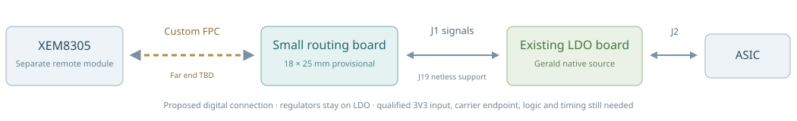

Small routing board
18 × 25 mm provisional outline around the LDO connector centres. Cable connector, components and tracks are unassigned.
ONE-CHIP BACKUP · XEM BY CABLE
A small board on the existing LDO board. The XEM stays separate and connects through a cable.
Size reference: the shared SpikeGadgets Rev. 2.5 board. Its photos have no verified dimensions; 18 × 25 mm is a proposed socket envelope, not a measured SpikeGadgets size.
Loading 3D concept…

18 × 25 mm provisional outline around the LDO connector centres. Cable connector, components and tracks are unassigned.
18.300 × 42.025 mm source envelope. J1/J19 face the routing board; J2 remains at the ASIC end.
The cable is a functional path. Its connector, numbered wiring, power and return arrangement still need confirmation.
J1 carries 23 ASIC signals, two 3V3 contacts and two DGND contacts in the supplied LDO CAD. Its VCC contacts 47/48 are isolated in that source. J19 is a PCB-only, netless footprint; its electrical role and custom pad numbering need verification. These source facts do not assign a cable pinout.
The source LDO outline and J1/J19/J2 centres come from the audited October 2 Gerald native PCB. The two LDO connector centres are registered to the new concept by a 180° face reversal and translation. This illustrates the board relationship; it does not prove connector mating, pin continuity, stack height or clearance.
All 3D shapes are simplified geometric illustrations. Connector bodies, regulator components, cable hardware, traces and XEM hardware are omitted. The dashed cable endpoint is not a selected physical footprint. The exploded gap is illustrative.
C1/R4 direct-mate studies are historical and unselected. The current instruction is a small board referenced to SpikeGadgets, with XEM connected by cable.
No native C2 ERC/DRC or routing-completion claim is made. Exact SpikeGadgets width × height and the selected cable with its endpoint pinout remain necessary design inputs.
Source facts and registration ↗ · Review notes ↗ · Dated meeting context ↗